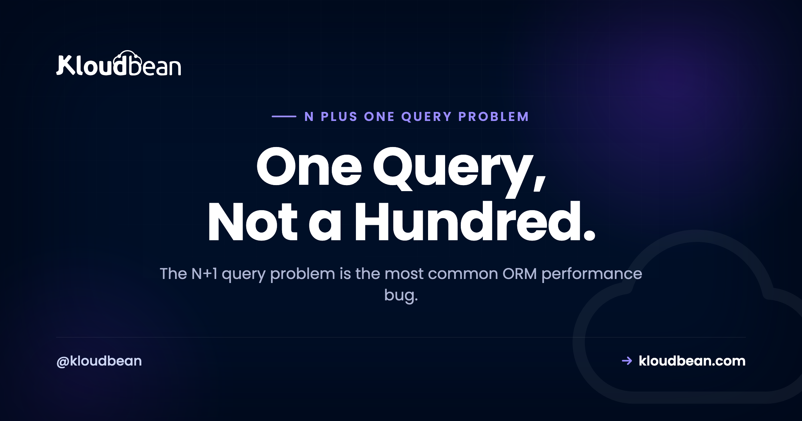
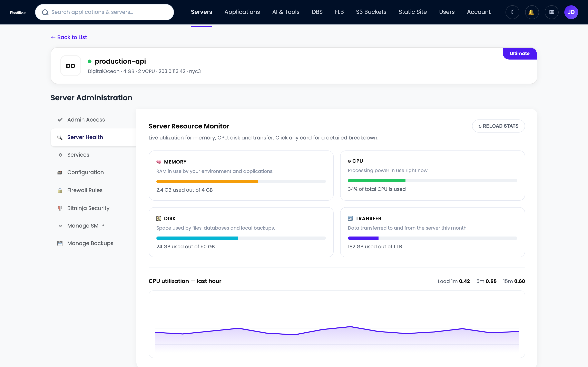

The N+1 Query Problem: The Slow ORM Bug That Hides Until Production

You build a page that lists 50 blog posts with each author's name. Locally it's instant. You ship it, real data shows up, and the page that felt snappy now takes three seconds and pins the database. Odds are you just met the N+1 query problem, the most common performance bug an ORM will hand you.
This guide is the whole picture. What the N+1 query problem actually is, why it hides in development and melts in production, and how to fix N+1 queries with eager loading in Prisma, Django, Rails, Sequelize, and TypeORM. Real code you can paste, plus the honest part most articles skip: eager loading isn't always the right move.
The N+1 query problem is when your code runs 1 query to load a list, then 1 more query for each row's related data. Fifty posts turns into 51 queries where 2 would do. The cause is lazy loading, where reading post.author quietly fires its own query. The fix is eager loading: tell the ORM to fetch the relation up front with Prisma include, Django select_related or prefetch_related, Rails includes, or Sequelize include.
What is the N+1 query problem?
The N+1 query problem is a performance bug where an app runs one query to fetch a list of records, then one more query per record to fetch a related field. Loading 50 posts and each post's author takes 51 queries where 2 would do. It scales with your data, so it gets worse as rows grow.
Here's the shape of it in code. You load a list, then loop over it and touch a related object:
# Rails / ActiveRecord, the canonical example
posts = Post.limit(50) # 1 query: SELECT * FROM posts LIMIT 50
posts.each do |post|
puts post.author.name # each access fires its OWN query
end
# 1 (the posts) + 50 (one author each) = 51 queriesThat 1 is the list query. The N is the fan-out, one small query per row. Add them and you get N+1. Two queries of work, done as fifty-one.
Different ORMs trigger it in slightly different ways, and it's worth being precise because people get this wrong. In Rails, Django, and Sequelize the extra query fires the moment you touch the relation. That's lazy loading. Prisma doesn't lazy-load relations at all, so there the same explosion shows up when you loop and query per item, or when you forget to include the relation. Same bug, different trigger.
Underneath, here's what the database actually receives. One tidy list query, then a stack of near-identical single-row lookups:
-- the "1"
SELECT * FROM posts LIMIT 50;
-- the "N", one per post
SELECT * FROM users WHERE id = 1;
SELECT * FROM users WHERE id = 2;
SELECT * FROM users WHERE id = 3;
-- ...47 more just like it...And here's the same job done right, in two queries. Either one batched follow-up, or a single JOIN:
-- option A: one batched query for every author
SELECT * FROM posts LIMIT 50;
SELECT * FROM users WHERE id IN (1, 2, 3, ...);
-- option B: a single JOIN, one round trip
SELECT posts.*, users.*
FROM posts
JOIN users ON users.id = posts.author_id
LIMIT 50;Hold onto those two options. The batched IN (...) versus the JOIN is exactly the distinction that trips people up in Django later.
Why does it look fine in dev and melt in production?
This is the reason N+1 is so common. It passes every check you run locally.
In development you seed 5 rows. Five posts means 1 + 5 = 6 queries, against a database running on the same laptop where each query returns in a fraction of a millisecond. Six queries at half a millisecond is three milliseconds. The page feels instant. Nothing looks wrong, no test fails, the code review passes.
Then production arrives with 5,000 rows. Now it's 1 + 5,000 = 5,001 queries. And the production database isn't on the same box, it's across a network with a real round trip of a millisecond or two each way. Five thousand tiny queries, each paying network latency, adds up to seconds of wall-clock time for one page load. The query that "worked" now times out.
That dev-to-prod cliff is the whole story. The bug's cost is a function of row count and network distance, and both are tiny in dev. You can't feel N+1 on 5 rows. You feel it hard on 5,000. So it ships, quietly, over and over.
Why do ORMs cause N+1 queries?
Because lazy loading is convenient, and convenience hides cost. An ORM lets you write post.author.name and it just works. You never wrote a query. That's the selling point. But behind that dot is a database round trip, and when the dot sits inside a loop, you've written N round trips without seeing a single line of SQL.
I want to be fair to ORMs here, because they take unfair blame for this. The abstraction isn't broken. It's doing exactly what it promised: making related data feel like plain object access. The problem is that "feels free" and "is free" are different things, and lazy loading blurs the line. A relation that costs one query on one object costs N queries across a list, and nothing in the syntax warns you which situation you're in.
The fix isn't to abandon the ORM. It's to tell it, once, that you want the relation up front. That's eager loading.
The fix: eager loading in each ORM
Eager loading means telling the ORM to fetch the relations you'll need at the same time it fetches the list, in one or two queries instead of one-per-row. Every major ORM has a word for it. Here's the fix in the ones people actually use.
How to fix N+1 in Prisma (include / select)
Prisma is explicit, so the N+1 usually comes from querying inside a loop. Replace that with include, and Prisma fetches the relation in one extra batched query. Use select when you only want a couple of fields.
// N+1: a findUnique per post
const posts = await prisma.post.findMany({ take: 50 })
for (const post of posts) {
const author = await prisma.user.findUnique({ where: { id: post.authorId } })
}
// Fix: eager load the relation in one go
const posts = await prisma.post.findMany({
take: 50,
include: { author: true },
})
// Or pull only the fields you render
const posts = await prisma.post.findMany({
take: 50,
select: { title: true, author: { select: { name: true } } },
})Wiring Prisma up in production has its own gotchas beyond N+1. If that's where you are, see connecting Prisma to a managed database. Using Drizzle instead? Same idea, different syntax, covered in connect Drizzle to Postgres.
How to fix N+1 in Django (select_related vs prefetch_related)
Django gives you two tools, and choosing wrong is a classic mistake. They exist because a JOIN and a batched query win in different situations.
# N+1: the template loops posts and reads post.author
posts = Post.objects.all()[:50]
for post in posts:
print(post.author.name) # 1 query per post
# Fix A: select_related -> a SQL JOIN, for ForeignKey / OneToOne
posts = Post.objects.select_related("author")[:50]
# Fix B: prefetch_related -> a second batched query, for M2M / reverse FK
posts = Post.objects.prefetch_related("comments")[:50]select_related does a JOIN and pulls the related row in the same query. It's the right call for a forward foreign key or a one-to-one, where each post has exactly one author. prefetch_related runs a separate query with an IN (...) clause and stitches the results together in Python. That's what you want for many-to-many and reverse foreign keys (one post, many comments), because a JOIN there would multiply your rows.
The mistake I see most: reaching for select_related on a to-many relation. Django won't let you JOIN a many-to-many that way, and even where a JOIN is technically possible, duplicating every post row once per comment is the opposite of a fix. Rule of thumb: to-one takes select_related, to-many takes prefetch_related. Deploying the Django app itself is a separate topic, walked through in deploy a Django app.
How to fix N+1 in Rails (includes)
ActiveRecord has one friendly word, includes, and it decides the strategy for you.
# N+1: one author query per post
@posts = Post.limit(50)
@posts.each { |p| puts p.author.name }
# Fix: eager load the association
@posts = Post.includes(:author).limit(50)includes defaults to a separate batched query (like preload), and switches to a JOIN (like eager_load) if you reference the joined table in a where or order. You can force either with preload or eager_load directly. And if you want the bug to yell at you before it reaches production, add the bullet gem in development. It flags N+1 the moment one happens.
How to fix N+1 in Sequelize and TypeORM
Node's two big ORMs both eager load through a relations option.
// Sequelize: include the association
const posts = await Post.findAll({
limit: 50,
include: [{ model: User, as: "author" }],
})
// TypeORM: the relations option (or leftJoinAndSelect in a QueryBuilder)
const posts = await postRepo.find({
take: 50,
relations: { author: true },
})Both build a JOIN by default. Sequelize can split a to-many into a separate batched query with separate: true, which is the same JOIN-versus-batch tradeoff Django makes explicit. TypeORM's lazy relations (typed as a Promise) will N+1 if you await them in a loop, so prefer relations or a query builder when you're rendering a list.
The lazy trap and the eager fix, side by side
One table to keep by your desk. Find your framework, avoid the middle column, reach for the right one.
| Framework | The lazy trap | The eager fix |
|---|---|---|
| Prisma | querying per item in a loop | include / select |
| Django | post.author in a loop | select_related (to-one), prefetch_related (to-many) |
| Rails | post.author in a loop | includes (preload / eager_load) |
| Sequelize | per-item fetch or lazy getter | include |
| TypeORM | awaiting a lazy relation in a loop | relations / leftJoinAndSelect |
| Laravel Eloquent | $post->author in a loop | with('author') |
How do I detect N+1 queries?
The tell is simple: query count that scales with row count. Add 10 rows to the list, watch 10 more queries appear. If loading one page fires dozens of near-identical SELECT ... WHERE id = ? lines, that's N+1, no guessing required.
So the fastest way to catch it is to watch the queries your ORM runs. Turn on query logging in development:
// Prisma: log every query
const prisma = new PrismaClient({ log: ["query"] })# Django settings.py: print SQL to the console in dev
LOGGING = {
"version": 1,
"handlers": {"console": {"class": "logging.StreamHandler"}},
"loggers": {"django.db.backends": {"level": "DEBUG", "handlers": ["console"]}},
}Rails already logs every query in the dev console, and Sequelize logs by default (logging: console.log). Beyond raw logs, purpose-built tools make it obvious: django-debug-toolbar and nplusone for Django, the bullet gem for Rails, and any APM (the trace shows a waterfall of stacked identical queries). Whatever you use, the signal is the same. A wall of repeated single-row lookups.
Is eager loading always the answer?
No. And this is where the good articles stop and the honest ones keep going.
Eager loading has two failure modes of its own. The first is over-eager loading: pulling relations you never render. If you include every association out of habit, you drag megabytes of joined data across the wire and into memory to display a title and a name. That's just N+1 traded for bloat. Load the relations the page actually uses, no more.
The second is subtler. A giant JOIN can be slower than two queries. Join a one-to-many (50 posts, 20 comments each) and the database returns 1,000 rows with every post's columns repeated 20 times. That row multiplication, sometimes called a JOIN explosion, can move more bytes and cost more than a clean batched follow-up query would. This is the exact reason Django splits select_related (JOIN) from prefetch_related (batched IN). Each wins in a different case.
So here's my position, after watching this play out plenty of times. Default to eager loading the relations you render. For a to-one relationship (a post's author), a JOIN is usually the right, cheapest choice. For a to-many (a post's comments), prefer a batched second query over a JOIN that duplicates rows. Then measure. Don't blindly JOIN everything, and don't cargo-cult include onto every query. The goal is the smallest number of queries that returns only the data you'll use.
Where indexing and connection pooling fit
N+1 rarely travels alone. It floods the database with tiny queries, and two other issues quietly make that flood worse. They compound, which is why an N+1 page can take a healthy database down.
First, indexing. Every one of those WHERE id = ? lookups is only fast if the column is indexed. Primary keys are indexed automatically, but foreign key columns often aren't, depending on your database. If you're filtering or joining on an unindexed foreign key, each of the N queries does a sequential scan of the table. So N+1 on an unindexed column isn't 50 fast lookups, it's 50 full scans. Adding the index speeds up both the N+1 path and the eager-loaded IN (...) query, so it's worth doing regardless.
Second, the connection pool. Hundreds of little queries in flight tie up database connections while they wait their turn. Under load, an N+1 page can help push you into FATAL: sorry, too many clients already, which reads like a database problem but started as an app-code one. If that error looks familiar, the mechanics are in database connection pooling. And when the same lookups repeat across requests, caching the hot ones in managed Redis takes pressure off the database before you scale anything.
How this looks on a managed database
Let's be clear about ownership, because it matters. N+1 is an application-code bug. You fix it in your ORM, in your repo, by adding eager loading. No hosting platform can fix it for you, because the platform doesn't write your queries. What a good platform does is make the symptom visible and give you the companion fixes.
On Kloudbean you run a managed PostgreSQL or MySQL, and an N+1 storm shows up the way you'd expect: a spike in query volume and CPU on the database, right when a particular page gets traffic. The server health view is where you'd catch it.

The companion fixes live on the platform side and pair with the real fix in your code. An index on the foreign key so each lookup is cheap. Connection pooling so a burst of queries doesn't exhaust the ceiling. Managed Redis to cache repeated reads. A bigger database is a resize, not a migration, if you genuinely need more headroom.

One private network matters more than it sounds here. When your app and database sit on the same private network, even a chatty query pattern pays a tiny round trip instead of a public-internet one, so a mild N+1 hurts less while you fix it. The full walkthrough of wiring a database into an app is the pillar guide, add a managed database to your app, and the engine-specific view is managed PostgreSQL hosting.
Fix the queries in code. Run the database on infrastructure that shows you the storm.
Launch managed PostgreSQL or MySQL, watch query volume and CPU in one dashboard, and pair eager loading with indexing, pooling, and managed Redis when you need them. Start free at kloudbean.com, or see pricing.
Managed PostgreSQL & MySQL · Automatic backups · Private networking · Resize on demand · Free migration · Free trial
FAQ
What is the N+1 query problem?
It is a performance bug where an app runs one query to load a list of records, then one more query per record to fetch a related field. Loading 50 posts and each post's author takes 51 queries instead of 2. Because the query count grows with the number of rows, it scales badly and gets worse as your data grows.
What causes N+1 queries?
Lazy loading in your ORM. When you access a related object like post.author inside a loop, the ORM quietly runs a separate query on each access. The syntax hides the cost, so a relation that is one query on a single object becomes N queries across a list. In Prisma, which does not lazy-load, the same explosion comes from querying per item in a loop.
What is eager loading?
Eager loading tells the ORM to fetch the related data up front, at the same time it loads the list, using one or two queries instead of one per row. It is the standard fix for N+1. Under the hood it is either a single JOIN or a separate batched query using an IN clause to grab every related row at once.
How do I fix N+1 queries in Prisma?
Use the include option to load the relation with the list, for example prisma.post.findMany with include set to author true. Use select if you only want specific fields. Prisma then runs one extra batched query for the relation instead of one query per item, which turns 51 queries back into 2.
How do I fix N+1 queries in Django?
Use select_related for forward foreign keys and one-to-one relations, which adds a SQL JOIN. Use prefetch_related for many-to-many and reverse foreign keys, which runs a separate batched query and joins the results in Python. Picking the wrong one is a common mistake, so match the tool to the relationship type.
What is the difference between select_related and prefetch_related?
select_related performs a database JOIN and fetches the related row in the same query, which suits to-one relationships like a post's author. prefetch_related runs a second query with an IN clause and stitches results together in Python, which suits to-many relationships like a post's comments, where a JOIN would multiply rows. They exist because JOIN and batched queries each win in different cases.
How do I fix N+1 queries in Rails?
Use includes on the query, for example Post.includes(:author). ActiveRecord defaults to a separate batched query and switches to a JOIN if you reference the joined table in a where or order clause. You can force either strategy with preload or eager_load, and the bullet gem will flag N+1 in development.
How do I detect N+1 queries?
Watch the query count and see if it scales with row count. Enable query logging in development, such as Prisma's log query option or Django's django.db.backends logger, and look for the same single-row SELECT repeated once per row. Tools like the bullet gem, django-debug-toolbar, and any APM trace make the pattern obvious.
Is eager loading always better than lazy loading?
No. Over-eager loading pulls relations you never render, wasting bandwidth and memory. And a large JOIN across a to-many relationship can multiply rows and be slower than two queries. Default to eager loading the relations you actually display, prefer a JOIN for to-one and a batched query for to-many, then measure rather than JOINing everything by reflex.
Does the N+1 problem only happen with SQL databases?
No. The pattern appears anywhere you fetch a list and then fetch related data per item, including NoSQL databases, REST APIs called in a loop, and GraphQL resolvers. In GraphQL the standard fix is a batching layer such as DataLoader, which collapses per-item lookups into one batched request, the same idea as eager loading in an ORM.